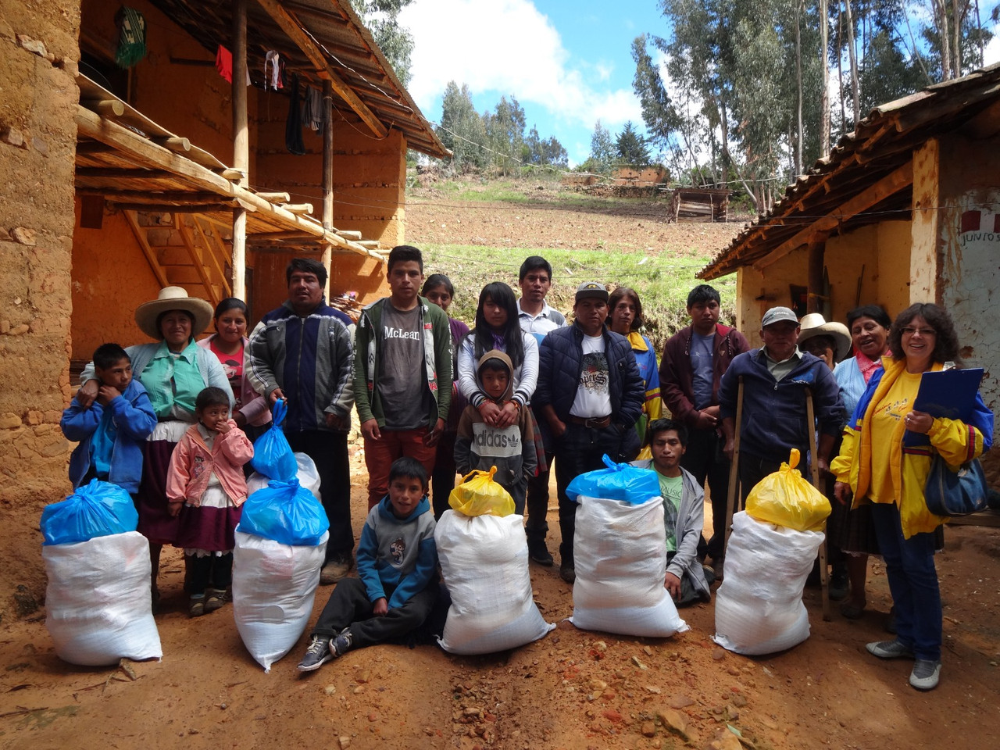

CAMINA CONMIGO
Luz de esperanza para la persona con discapacidad
Nuestro objetivo es revalorizar e integrar a los niños con habilidades especiales de las zonas rurales de Cajamarca que viven en situación de extrema pobreza, promoviendo su inclusión y una vida con mayores oportunidades.
Conoce quiénes somos
Camina Conmigo
Conoce nuestra historia, a las personas que forman parte de ella y el espíritu que impulsa a nuestra organización.
Caminar juntos
cambia historias
Camina Conmigo es una asociación civil y organización no gubernamental de desarrollo nacida en Cajamarca, Perú.
Nuestro propósito está orientado a la integración, revalorización y acompañamiento de niños, jóvenes y personas con habilidades especiales, enfocándonos especialmente en aquellas familias que viven en zonas rurales y contextos vulnerables.
¿Qué significa Camina Conmigo?
Nuestro logo no es solo una imagen, es nuestra filosofía. Las dos figuras representan el acompañamiento constante. Una persona avanza junto a la otra, porque el camino simboliza que, muchas veces, seguir adelante requiere de apoyo mutuo, empatía y solidaridad.
"Nadie debería caminar solo."

Acompañamiento
Integral y humano
Nuestra trayectoria
Años caminando junto a nuestra comunidad
Nuestra historia está construida con pasos firmes, trabajo constante y la solidaridad de cientos de personas. Estas son algunas de las historias que quedaron registradas en nuestro camino.
Campaña de Salud
Acercar servicios básicos de salud a nuestras comunidades rurales es fundamental para mejorar la calidad de vida de las personas con habilidades especiales y sus familias. Acciones concretas que marcan la diferencia.

Archivo histórico de Camina Conmigo
Visita de Reyes Magos
Junto al personal del Centro Comercial El Quinde
Cuando empresas, voluntarios y organizaciones se unen, es posible llegar más lejos y crear momentos inolvidables para nuestros beneficiarios.
TU EMPRESA TAMBIÉN PUEDE SUMARSE
Archivo histórico de Camina Conmigo
Trabajo Voluntario
Empaque Navideño
Detrás de cada entrega hay horas de dedicación. Nuestro equipo de voluntarios es el corazón de la organización, preparando con amor cada detalle antes de salir al campo.
QUIERO SER VOLUNTARIO
Archivo histórico de Camina Conmigo
Voces de nuestro camino
Lo que dicen quienes caminaron con nosotros
"Las mejores palabras para contar el impacto de Camina Conmigo son las de quienes han sido parte de este camino."
Nuestro canal de YouTube
Camina Conmigo en video. Explora todo nuestro contenido audiovisual.


Archivo Visual
Nuestro camino en imágenes
Un recorrido visual por las entregas, visitas, actividades grupales y el trabajo de campo que realizamos junto a nuestra comunidad.


¿Cómo ser parte del camino?
Existen muchas formas de sumarte a nuestra labor.
Dona
Tu aporte económico asegura la continuidad de nuestros programas y logística.
Contactar a GladisApoya con movilidad
Necesitamos Sprinter/Combi (15 pers) para nuestra salida navideña este 19 de diciembre.
Prestar MovilidadSé voluntario
Suma tu tiempo y talento participando en nuestras próximas actividades de campo.
ParticiparConviértete en aliado
Empresas e instituciones pueden apoyar mediante recursos, transporte o servicios.
Unir a mi empresa
El próximo paso también puede ser tuyo.
Camina con nosotros.